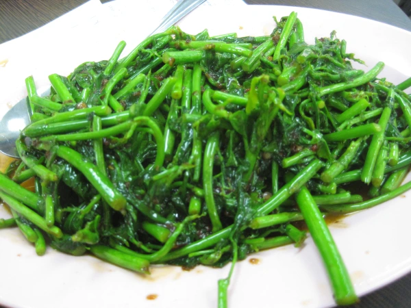

Ingredients
- 1 bunch of Sabah vegetables (fern, water spinach, or similar greens)
- 2 cloves garlic, minced
- 1 tablespoon cooking oil
- 1 tablespoon oyster sauce
- Salt to taste
Instructions
- Wash and trim the vegetables. Set aside.
- Heat oil in a pan and sauté garlic until fragrant.
- Add the vegetables and stir-fry for 3-4 minutes.
- Season with oyster sauce and salt, and cook until the vegetables are tender but still crisp.
- Serve immediately as a side dish or with steamed rice.